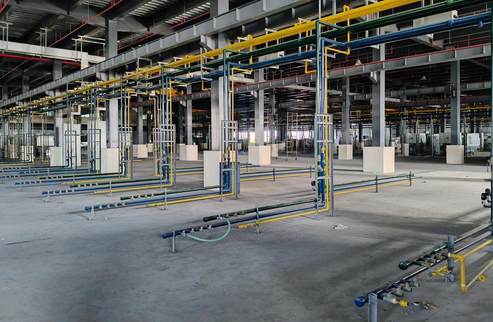

Industrial piping contractor in Batangas
Compressed air, chilled and cooling water, process and fire lines for manufacturing plants across Batangas, fabricated, installed and pressure-tested.
Request a quote
What we pipe
Utility and process piping from the compressor room, cooling tower or pump room to the last machine on the line.
We fabricate on site, route the lines so nothing blocks a production aisle or maintenance access, and pressure-test, flush and commission before handover, with test records for every system.
Compressed air
- Compressor rooms and repiping
- Air receivers and dryers
- Distribution headers and machine drops
- Pressure testing and leak checks
Chilled and cooling water
- Cooling towers and pump stations
- Chilled water and process cooling loops
- Machine hook-ups across the floor
- Flushing and commissioning
Process, fire and gas lines
- Process piping across the production floor
- Fire sprinkler mains and pump room pipework
- LPG gas lines for canteen kitchens
- Exhaust ducting and scrubbers
Piping across Batangas
Most of our piping work is in the Batangas industrial parks, for plants adding machines, lines or a new compressor room.
Our office is in Brgy. Trapiche, Tanauan, on the STAR Tollway side of the province, so crews reach the Sto. Tomas, Malvar and Lipa industrial parks the same morning and Batangas City and the western towns within the day.
Towns and cities
- Tanauan City and Sto. Tomas
- Malvar and Lipa City
- Batangas City, Bauan and San Jose
- Rosario, Ibaan and Padre Garcia
- Calaca, Lemery and Balayan
- Nasugbu and the western towns
Industrial parks
- First Philippine Industrial Park (FPIP), Sto. Tomas and Tanauan
- Light Industry and Science Park III, Sto. Tomas
- LIMA Technology Center, Malvar and Lipa
- Warehouses and plants outside the ecozones
Adding machines or a compressor room in Batangas?
Send the layout or drawings if you have them. Without drawings we visit the site, give a budget figure, then firm it up.
Request a quoteQuestions from Batangas clients
Which parts of Batangas do you cover?
All of Batangas. We are based in Tanauan and regularly work in Sto. Tomas, Malvar, Lipa and the FPIP, LISP III and LIMA industrial parks, and travel to Batangas City, Calaca, Nasugbu and the rest of the province. We also take projects in Laguna, Cavite and nationwide.
What kind of piping do you do?
Industrial and process piping for plants: compressed air, chilled and cooling water, process lines, fire sprinkler mains and LPG gas lines. We do not take residential plumbing.
Do you pressure-test the lines?
Yes. Every system is pressure-tested and leak-checked, and water systems are flushed and commissioned, with test records in the handover pack.
Can you tie in while the plant is running?
Yes. We prefabricate, then schedule tie-ins to your shutdowns and work around production hours.
How do we get a quotation?
Call 0926-668-8988 or send the enquiry form with your layout, drawings or specification. Without drawings we can survey the site, give a budget figure, then firm it up.